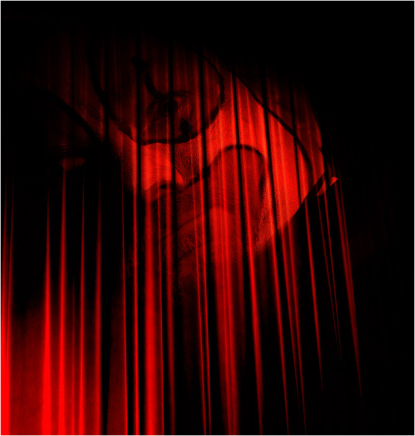
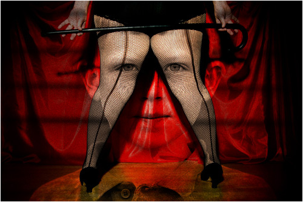

| |
 |
 |
| |
 |
Ден 1 |
|
| |
|
|
Ален Корбин, детектив:
Првиот настап на Мудрите Јарци во Скопје е значаен по многу нешта. Пред се, тоа е првиот настап што се снима на аудио и видео во согласност со договорот за издавање на ДВД-то Мудрите Јарци и Допелгангер за австриската издавачка куќа Гностик. Второ, тоа е првиот настап на Мудрите Јарци според дизајнот на Кловнот по мистериозното исчезнување на Самовилата – со месеци пред нивното пристигнување во Скопје тие се појавуваат единствено како речиси невидливи елементи во точки за поголем ансамбл (заедно со Децата од Гума, Камшикарот, Тигрите од Венера, Челичниот Човек, Господарот Зед и неговите чопери). Трето, во нивниот говор се појавува ликот Снегорог на кој ќе се осврнат повеќе пати во следните неколку дена и кој можеби е личност поврзана со нивното исчезнување. Четврто, говорот на Мудрите Јарци изложен на следните страници не е целосен – делот од лентата што отсуствува можеби е поврзан со движењето на Децата од Гума околу опремата за снимање за време на настапот (Кловнот тврди дека причина за таков сомнеж нема и дека проблемот е од чисто техничка природа). Петто, ова е последен настап на Мудрите Јарци со класичната турска табла за шах, речиси проѕирна од огромниот број партии одиграни на неа...
КЛОВНОТ: Дами и господа, со големо задоволство ви ја прикажуваме точката што го прослави Допелгангер ширум светот. Следат легендарните Мудри Јарци! (ракоплескање) Во овој момент нашите две ѕвезди се длабоко внесени во нивната омилена игра, и чисто меѓу нас, мислам дека оној десно води. (смеење) Но, ова е една партија шах што нема да биде завршена наскоро, затоа што откако јарците ќе ја испијат медовината што Камшикарот им ја принесува во моментов, тие ќе престанат со играта и ќе ви раскажат на разбирлив македонски јазик приказна или две со многу корисна поука. Почекајте само уште еден миг и светот никогаш повеќе нема да ви биде ист!...
ДЕСНИОТ ЈАРЕЦ: (тивко, речиси нечујно додека Кловнот зборува) Мртвиот му рекол на глувиот: „Знам зошто светот исчезна; за претставата да почне...“ (негодувања во публиката)
ЛЕВИОТ ЈАРЕЦ: Кх-кх... Блее... АКО САКАТЕ мистерии облепени со смола-од-тишина и испрскани со политик-габички, мистерии што пливаат кон жилавата неонка само за да пропаднат под хартиената шахта... грмнете по некоја пуканка со кафе и ѕирнете зад закрвавените очи на нашето сонце! (аплауз, се слуша гласно: Ова е трик! Ко со марионети! Ти шуш!)
Д.Ј.: Свртете се наоколу. Ако мислите дека ова околу вас е само шатор со два-триесетина кобајаги чукнати и ушљакани циркузанти, уф какво непријатно изненадување ве чека вас и вашите деца... Мислите дека Антигона е трагичар?
Л.Ј.: Забележете ги само тие одаи крај влезот што се појавуваат и исчезнуваат со бранувањето на завесите. Наведнете се да ја видите мачката чии шари се менуваат со секое протнување под клупите на кои седите. Запрашајте се што се случи со Топовското Бркле!... Со мачнина во стомакот прочитав еднаш во локалниот весник, „Што ѓавол се крие позади сите тие маски зад маски зад маски?“... Како на ТВ квиз облиен со катран, и одговорив на сопствената муцка: „ШТО Е ДОПЕЛГАНГЕР?“ (непријатна смеа во публиката)
Д.Ј.: А зошто се отвараме пред вас тука и сега, фрлајќи се директно на пластичниот циркуско-чобански нож како прасиња желни за внимание (ене го Џуџето, уште сега го остри)? Сигурно само ве влечеме за нос додека саатот отчукува, уште една точка што лочка...?
Л.Ј.: Тик-так-тик-так...
Д.Ј.: Се случи тоа пред неколку месеци. Темница со мирис на сено, наоколу штурци и тивко ’ржење на тигри... и наеднаш блесок! Самовилата исчезна таму каде што беше невозможно да се исчезне, на работ од шаторот за животни, на десетина метри од нас... на самото устие од главната сцена... И никој ништо ни видел ни чул, „Каков блесок, какви глупости, малата сигурно збришала...“ Се вртиме наоколу збунети; претходниот ден ја славеа сите како кралица на циркусот, а сега наеднаш никој, па ни вечно „храбриот“ Партизан не мрда ни со мал прст... Но Самовилата, таа која со сета своја нежност последна ни трепна на нас, не обврза на едно нешто само пар дена претходно...
Л.Ј.: Наречете го навестување, како сакате...
Д.Ј.: Таа трепна, „Ако некогаш ме проголта мракот на Допелгангер, не тажете, нема за што да се тажи, туку расчепатете ги муцките, тивко и нежно отпрвин, а потоа се посилно како тајфун, погласно од било кога... и растресете го ова дувло од зазлобени шишарки. Не дека муцката на јарец-два ќе смени нешто, но завесата мора да се крева одвреме-навреме, ако ништо друго, барем да се подзачисти мрсната прашина под неа...“ И потоа се насмевна...
Л.Ј.: Па добро, да почнеме тогаш со Восочниот Црвен Нос лично! Некој ќе ви каже дека Кловнот не оставил да зборуваме на мира само затоа што црвеното носе му заиграло по парите на онаа австриска издавачка куќичка, ама нема шанси – Кловнот е роден да ги мрси марионетите под него, не е до толку глупав. Или можеби е? Се сеќавам на еден кловн што го предизвика Каубоецот во куглање, онака, на кладба, што е чисто самоубиство... Зар за неколку чисти илјадарки Кловнот би ги ризикувал сите оние калливи милиони?
Д.Ј.: Ќе не остави ли на мира да раскажеме се што знаеме за Снегорог? Оној валкан Снегорог чие име го шеп-шепнуваат во ист здив со исчезнувањето на нашата толку сакана Самовила? Да сме од злоба направени, секој наш зборец би бил колец и би го плукале право во неговото биковско срце, a Шајкоглавиот би му завидувал на болката... (дете почнува да плаче во публиката)
Л.Ј.: ...Но за болка и слични занимации, обратете му се на Џуџето кое – се кладам – во моментов го пали сеното на камилите. (непријатна смеа во публиката) Не, дури и заканата на Кловнот – дека ќе не претвори во грчка супа ако не сме хиперсупер насмеани денеска – е само џилитење...
Д.Ј.: Еднаш во циркусот се бутна наркоманче што во цел занес посака да ни ги поправи очите со бургија. Кутрото слабичко човеченце не можеше ни да ја крене бургијата од земја; офкаше толку силно во очај, што го разбуди цел циркус. Двоглавиот Јаким стигна прв и место веднаш да го зграпчи наркоманчето, тој прсна во смеење на глетката. Човекот беше пуштен дома следното сабајле, ама дури откако Кловнот наполни цел лонец со негови солзи. „Опиумски солзи“, ги нарече, „Со една чашка го отвараш Третото Око, а со две и Четвртото. Никој не преживеал три чашки и добро што е така!“
|
|  |
Л.Ј.: Кловнот и неговите изуми – за да го реши проблемот што работниците се почесто се степуваа тој им наложи да носат рударски кациги со ликот на Астробој. „Никако Мики Маус! Мики Маус не чини, за џабе ќе ставате кациги. На вас ви треба Астробој!“ (смеа во публиката) А вие не ја ни знаете приказната за филмот на Децата од Гума...
(тука фали дел од снимката)
Д.Ј.: ...Значи Кловнот и Самовилата имаа извонредни односи, Камшикарот има свињи што летаат до Марс и назад, а на Мечката еден ден ќе и порасне нова шепа! Како не... Самовилата му беше интересна на Кловнот само кога настапуваше. Ќе се испрчи напред и ќе аплаудира најгласно од сите, затоа што таа го допрела неговото срце најдлабоко. Можеше да се види нејзиниот одраз во неговата шминка – така светната и убава во лик, но прекршена во Хидра врз шарената маска.
Л.Ј.: Тешко е да се каже дали тој некогаш ја ценел нејзината точка: не би ме изненадило ако тој всушност бил нејзин најголем и најлигав обожавател. Без разлика, ако некогаш се сретнеа сред бел ден, во сеното пред сибирските тигри на пример, таа ќе му се насмевнеше и ќе трепнеше со очичките, а тој само ќе и кажеше, „Имаш сколопендра на лицето, лупни се со лопата, помага,“ или „Пари за млеко од Галапаго желка ќе ми побараш, нели? Еве ти клуч од нејзиниот базен, измолзи си ја сама. После донеси ми чаша и мене.“ (смеа во публиката)
Д.Ј.: Еднаш додека игравме шах со неа, Кловнот ни влезе во шатор, веројатно по грешка (делуваше малку сонливо и изгубено), се загледа во таблата и проц’цка, „Џабе играш шах во млеко, јарци се ова, не кози... А вие, супер ви иде, она е коза од глава до пети...“ (смеа во публиката)
Л.Ј.: Ама 100% убеден сум дека Кловнот се преправа кога истура такви гнасотии низ карминираната уста. Допелгангер ги извиткува и преобликува како глина сите што ќе поминат низ него. Видете ги само Мечката и Партизанот. Таа е немоќна и саката сенка денес – каков створ само била пред да дојде тука, прав Левијатан – а Партизанот... ајде друг пат за него, долга и мрак приказна е... Битно, зошто Кловнот би бил имун на Допелгангер?
Д.Ј.: Децата од Гума на глас го читаа писмото што Снегорог му го пратил на Кловнот. „Сакам хавајски ракчиња што сеат ерес. Стоп. Со секоја конзерва, три Харконени и Азраел на жар со пола година гарантиран Роршах. Стоп. И сонце да грее и ветар да дува. Стоп. ВудуБуда да те чува. Стоп.“ Во код е напишано, секако. И да бил имун и да не бил, на исто се сведува – што и да и се случило на Самовилата, тоа би било со негова дозвола. За разлика од многу бубачки и шумски ѕверки по светов, не можеш да си играш игри со Снегорог, варшавскиот киклоп. Како дијалектички насилник, мајмун со фотоапарат лице – те погледнува еднаш и потоа вечно те прати; го голта твојот момент и од него живее со векови. (од публиката се слуша: Европски комесар, е*ате!) Имам лошо чувство дека го следи секој наш потег со денови наназад...
Л.Ј.: Популарноста е мртва категорија за таквите како Снегорог. Ако човек сака популисти, им се обраќа на Кловнот и Децата од Гума, а само ако има потреба од нешто катран калливо, тие ќе прекршат врат или два да го исконтактираат Снегорог. Публиката е светица за Децата од Гума. Во каква штала и да зацопаат пред настап, за публиката мора да блескаат, па ако треба ќе дубат на глава и ќе го фатат Били Ајдол убаво да го исплескаат. Пред неколку години, кога бумна интересот во манга стрипови, Децата од Гума навреа јапонски маски, се претворија во малолетни гејши (и тоа успешно: јапонските туристи се напалија добро). Ама кој е до толку Сатана да ги обвини за било што? Никој тука не платил карта од (која валута е тука?) 600 денари за да лапа муви – тие се забавувачи, шарлатани, баклавести смешковци и така работите треба да бидат. Кога не им оди, се нервираат и паѓаат во депресија ко и секој нормалчик. „На кој гроб сум згазил што ме зјапаат така ококорено бледо, пи*ка им мајчина? Па стварно не е фееер, бууу...“ знаат да се расплачат Децата од Гума од време на време. Кловнот е поинаков – тој кога не е среќен се шета до локалниот бар, прави ’ршум и се враќа без да плати сметка. Нека смее некој да влезе во неговиот циркус без негова дозвола...
Д.Ј.: Ама сепак... Последната вечер пред да исчезне Самовилата, шетајќи се низ ходниците на Допелгангер, налетавме на триаголна дупка во црвените завеси низ која се гледаа седнати во фотељи Децата од Гума и една крупна непозната жена накај ’50-тина години во жолта униформа. Светлото беше расипано, трептеше и зуеше, па не можевме убаво да ја видиме формата што децата ја имаа попримено, ама за момент личеа на шакали. Зборуваа за се и сешто наеднаш: земјотресите во Азија („Така ти е, на летовање у Азија, фраери ќе се правиме; е на ви, фраери ако сте“), високите даноци во западноевропските земји („А што прават во Владата, бришат га* со дијаманти?“), приливот на Африканци во Шпанија и Франција („Абе тоа све треба и втор сунет едно метро погоре“) и националистичката политика што овие земји ги спремаа како одговор („Да ќареше само Ле Беф на изборите и се ќе беше поинаку“)...
Л.Ј.: Тргнавме да си одиме, немаше смисла да се прислушкува, кога децата ја спомнаа Самовилата...
Д.Ј.: Рекоа, „Онаа летечка ку*ва со кого не се испанџа у циркусов; море шо убо ќе биде кога ќе летне надвор. Преку такво со тоа понашање, а пред нас е ставена на постерот и толкави пари зима, а ние ни за леб немаме. ’Кралицата на Допелгангер’ жими таквото.“ Тука не погодија во срце, и едвај се воздрживме да не им се стрчаме и да ги качиме на рогови...
Л.Ј.: Не се жести пак. Само смирено...
Д.Ј.: Се повлековме навреме, ама последно нешто што допре до нас е гласот на жената, на почетокот така длабок и продорен, а сега висок и мазен, како и самата да се преобличила во некој чудесен створ, „А што ако ви кажам дека нема да мора да ја трпите уште долго? Мајлс и свири под перница веќе 18 ноќи. Ќе пукне секој ден сега, ко Хампти Дампти, само бетер...“
Л.Ј.: Туку, еве го Кловнот со јајце во рака, покажува дека треба да привршиме... А и време е... Медовината приврш... ува... зошто го крши јајцето?...
Д.Ј.: И додека си одевме накај нашата колипка, го слушнав... блее... го слушнав Допелгангер како се смее... се колнам... и тогаш шаторот светна... блесна во цело свое... црвенило... онака: БЛЕС!
|
|  |
| |
|
|